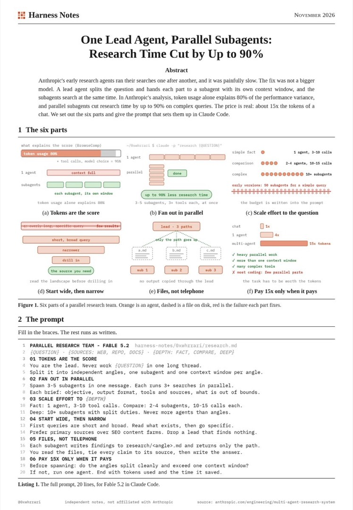
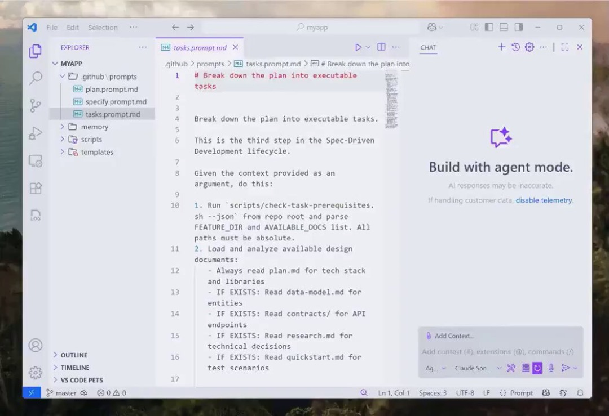
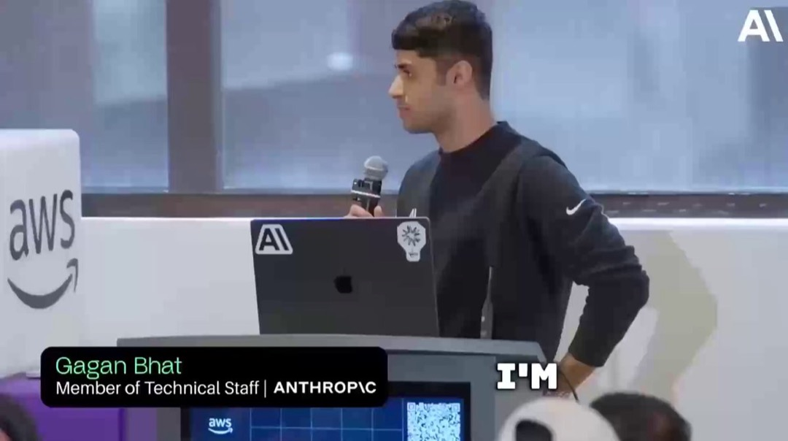
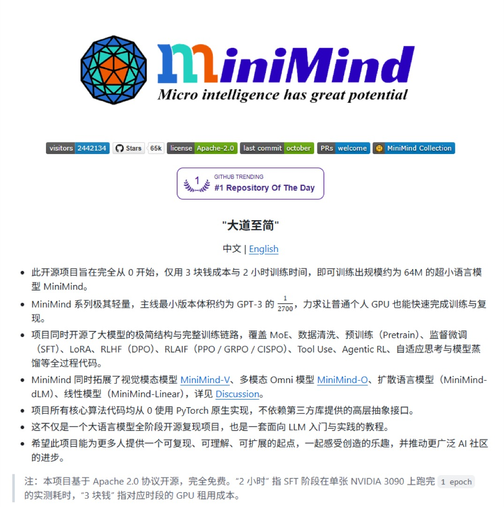

本期速览
01 Anthropic 多智能体并行研究提效九成
02 Lokutor 在 ESP32-S3 实现离线语音识别与合成
03 GitHub Spec Kit 用规格先行约束编码智能体
04 Anthropic 托管智能体分离大脑与工具沙箱
05 MiniMind 开源大模型全链路训练代码
01｜Anthropic 多智能体并行研究提效九成
来源（X） · @0xwhrrari · 2026-11-26 23:23
中文译文
这篇Anthropic的多智能体论文简直是神作
Anthropic早期的研究智能体一次只搜索一个查询，慢得让人抓狂。同样的问题，拆分给并行的子智能体：研究时间最多减少90%。而且模型本身并不是升级点。
升级点在于：主智能体不再自己搜索，而是开始分配搜索角度。
拆分 → 并行分派 → 预算 → 收窄 → 回传路径
升级点在于：主智能体不再自己搜索，而是开始分配搜索角度。
拆分 → 并行分派 → 预算 → 收窄 → 回传路径
并行研究团队的6个部分：
第1部分 → token就是比分
仅token使用量就解释了80%的性能差异。
加上工具调用和模型选择，就是95%。
第2部分 → 并行分派
主智能体一次性启动3-5个子智能体，每个并行运行3+个工具。
这让复杂查询的研究时间最多减少了90%。
第3部分 → 根据问题规模调整投入
简单事实：1个智能体，3-10次工具调用。比较类：2-4个子智能体。复杂类：10+。
早期版本对简单查询就 spawn 了50个子智能体。
第4部分 → 先宽后窄
长而具体的查询返回结果很少。
先用简短宽泛的查询，然后再深入。
第5部分 → 用文件，别打电话
子智能体把工作保存到文件，只回传路径。
没有大块内容通过主智能体复制传递。
第6部分 → 只在划算时才付15倍
智能体使用的token大约是聊天的4倍。多智能体系统大约是15倍。
大多数编码任务真正可并行的部分比研究少。
一个智能体一次搜索一个查询需要数小时。一个拥有并行子智能体的主智能体几分钟就搞定。
我把全部6个部分打包进了一个提示词。丢进Claude Code，它就会为你组建一个研究团队。
6个部分。1个提示词。数小时变数分钟。
然后读下面的文章 ↓
原文
This Anthropic multi-agent paper is f*cking gold
Anthropic's early research agents searched one query at a time, and it was painfully slow. Same question, split across parallel subagents: up to 90% less research time. And the model wasn't the upgrade.
The upgrade: the lead stops searching and starts handing out angles.
split → fan out → budget → narrow → hand back paths
The upgrade: the lead stops searching and starts handing out angles.
split → fan out → budget → narrow → hand back paths
The 6 parts of a parallel research team:
Part 1 → tokens are the score
Token usage alone explained 80% of the performance variance.
Add tool calls and model choice and it's 95%.
Part 2 → fan out in parallel
The lead spins up 3-5 subagents at once, each running 3+ tools in parallel.
That cut research time by up to 90% on complex queries.
Part 3 → scale effort to the question
Simple fact: 1 agent, 3-10 tool calls. Comparison: 2-4 subagents. Complex: 10+.
Early versions spawned 50 subagents for simple queries.
Part 4 → start wide, then narrow
Long, specific queries return few results.
Short broad queries first, then drill in.
Part 5 → files, not telephone
Subagents save their work to files and pass back only the path.
Nothing big gets copied through the lead.
Part 6 → pay 15x only when it pays
Agents use about 4x the tokens of chat. Multi-agent systems use about 15x.
Most coding tasks have fewer truly parallel parts than research.
One agent searching one query at a time takes hours. A lead with parallel subagents does it in minutes.
I packed all 6 parts into one prompt. Drop it into Claude Code and it sets up a research team for you.
6 parts. 1 prompt. Hours to minutes.
Then read the article below ↓

引用内容
rari🈀 @0xwhrrari
中文译文
你的智能体通过了所有测试
问题仍然开放
更好的提示词解决不了，因为模型不是坏掉的那部分
我拆解了围绕它的 harness、循环和图：各自拥有什么、如何嵌套、以及应该先修哪个 ↓ https://x.com/i/article/2118252167026864128
原文
Your agent passed every test
The issue is still open
A better prompt won't fix it, because the model isn't the broken part
I broke down the harness, loop and graph around it: what each one owns, how they nest, and which one to fix first ↓ https://x.com/i/article/2118252167026864128
02｜Lokutor 在 ESP32-S3 实现离线语音识别与合成
来源（X） · @xiaomovps · 2026-11-26 20:36
以前玩 ESP32 语音小助手，要么只能认几个固定唤醒词，要么就得连云端 API
最近翻到一个叫 Lokutor 的开源团队，把听和说两套流式模型全塞进了 ESP32-S3 N16R8，不用 NPU 也不用连云端
真不敢想 这么小的模型都能跑出这样的效果，以后硬件肯定越来越小型化 越来越便携化，还是要多关注一下硬件和 AI 的结合
一、Oído v2：纯本地流式语音识别
不是固定指令表，而是开放词表整句识别，全靠手写 C 引擎吃透芯片的 PIE 向量指令
单核 240MHz 就能实时跑，轻量版 5.9MB，RTF 0.54，说完 259ms 出字
加上默认 0.8 秒静音断句，停口后大概 1.1 秒就能看到结果
硬件门槛：ESP32-S3 N16R8（16MB Flash + 8MB PSRAM）加一个 INMP441 麦克风
项目地址：https://github.com/lokutor-ai/oido
二、Ito v1.1：纯本地流式语音合成
从大模型蒸馏到 3.34M 参数，权重不到 4MB，连 espeak-ng 文本前端也一起塞进了芯片
不用电脑上位机，输入文字到吐出首段 24kHz 音频只要 188ms 到 253ms，支持男女两个音色
硬件门槛：同样是 N16R8，外接一块 PCM5102A 或 MAX98357A 功放就行
项目地址：https://github.com/lokutor-ai/ito
门槛也提前说清楚，目前这两套都还不支持中文，Oído 支持英文和西语，Ito 只支持英文
另外双核满载容易把供电拉掉电，所以 Oído 默认单核，Ito 开机自检扛不住会自动降速
以前觉得几十块的板子只能做个传话筒，现在听和说都能离线跑在板子上了，后面再接上自己的 Agent 玩法空间太大了
手里有 ESP32-S3 N16R8 的可以先去实测报告和网页版 Demo 听听效果，个人折腾完全免费
实测报告：https://lokutor.com/blog/real-time-speech-on-a-5-dollar-chip/
引用内容
小墨同学 @xiaomovps
中文译文
原文
03｜GitHub Spec Kit 用规格先行约束编码智能体
来源（X） · @liambraus · 2026-11-26 23:34
中文译文
GITHUB刚刚解决了VIBE CODING最大的问题
他们刚刚发布了Spec Kit，短时间内已经获得+126K星标。
思路是什么？
与其扔出模糊的提示词然后祈祷智能体不会搞坏你的项目……
Spec Kit强制AI在碰代码之前先创建结构化规范。
AI先理解你想构建什么，询问缺失的信息，组织项目，然后才开始编程。
这意味着修复荒谬错误的时间更少，不一致的代码更少，使用智能体时结果的可预测性大大提高。
流程很简单：
/constitution → 规则和标准
/specify → 你想构建什么
/clarify → 开始前的疑问
/plan → 架构和技术栈
/tasks → 有序任务
/implement → 执行
兼容Claude Code、Cursor、Copilot、Codex、Gemini CLI以及+25个智能体。
95K星标。8K forks。开源。由GitHub发布。
仓库链接放在下面。
原文
GITHUB ACABA DE SOLUCIONAR EL MAYOR PROBLEMA DEL VIBE CODING
acaban de lanzar Spec Kit y en poco tiempo ya tiene +126K estrellas.
¿la idea?
en vez de tirar prompts vagos y rezar para que el agente no rompa tu proyecto...
Spec Kit obliga a la ia a crear una especificación estructurada antes de tocar código.
la ia primero entiende lo que quieres construir, pregunta lo que falta, organiza el proyecto y después empieza a programar.
eso significa menos tiempo arreglando errores absurdos, menos código inconsistente y resultados mucho más predecibles cuando trabajas con agentes.
el flujo es simple:
/constitution → reglas y estándares
/specify → qué quieres construir
/clarify → dudas antes de empezar
/plan → arquitectura y stack
/tasks → tareas ordenadas
/implement → ejecución
compatible con Claude Code, Cursor, Copilot, Codex, Gemini CLI y +25 agentes.
95K estrellas. 8K forks. open source. publicado por GitHub.
os dejo el repo abajo.

04｜Anthropic 托管智能体分离大脑与工具沙箱
来源（X） · @tyay2015 · 2026-11-26 11:27
Anthropic 的一位产品工程师在开发者大会的闪电演讲里，直接把这背后的工程演化摊开了——从最开始的 Messages API，到后来的 Claude Agent SDK，再到他们最新推出的 Claude Managed Agents（托管智能体），说白了就是把开发者从无穷无尽的基建泥潭里捞出来。
最早大家调 Messages API，官方只管吐 Token，什么智能体循环、上下文管理、工具执行、断点恢复、日志监控全得自己从零手搓；后来有了 Claude Code 和 Agent SDK，虽然把运行循环、文件系统和沙箱打包给你了，可真到了生产环境，服务器托管、扩缩容、会话状态保存依然得自己扛。到了现在的 Managed Agents，玩法彻底变了：你只需要带着任务、智能体配置和自己的业务工具逻辑来，剩下的专用运行框架、沙箱环境、状态存档、密钥保险库乃至扩缩容和监控，Anthropic 在云端全包圆了。
整套系统的骨架其实特别清爽，就三个核心模块：第一块是定义“人设与能力”的配置，包括用哪个模型、提示词、工具、MCP 服务器和技能，全都有版本控制，改坏了随时回滚；第二块是划定“边界与护栏”的环境，规定容器长啥样、能连哪些外网域名；第三块就是把前两者捏在一起跑起来的会话（Session）。
这里面最狠的一刀架构改动，是把“大脑”和“双手”彻底拆开了。以前智能体的思考循环和工具执行全挤在同一个容器里，每次启动慢得像蜗牛，而且容器一挂整个循环跟着崩；现在大脑跑在云端服务端，工具沙箱只在真需要动手时才按需拉起。整个循环在云端通过事件流推进，哪怕你合上笔记本电脑，它照样在后台稳稳干活，扩缩容更快、延迟更低，也再也不会因为单点故障全盘崩溃。
他拿线上结账服务延迟飙升的 SRE 排障举了个例子：把排障智能体配置好、划好网络访问边界、把日志文件往云端一挂，它在真实沙箱里自己翻日志顺藤摸瓜找根因；测试满意后不用改架构，直接拿着同一个智能体和环境 ID 就能塞进自家产品里上线。更夸张的是他们往里面塞的一堆进阶玩法：除了多智能体协作，以及像定时任务一样每天早上八点自动发简报的触发器，还有专门加密存 API 密钥的 Vaults 保险库、能按质量标准反复打磨产出的 Outcomes 机制，甚至还有一个叫 Dreaming（做梦） 的功能——让智能体在后台自己复盘历史对话记录，把经验自动沉淀成新技能、更新记忆库，越用越聪明。
这就好比以前你想开家餐馆，就算厨师手艺现成的，你还得自己去租店面、接水电燃气、装消防监控、给食材建冷库，光装修办证就能把人熬秃；而现在这套托管架构，等于直接把水电全通、自带冷库和安保的中央厨房摆在你面前，你只要把独门菜谱和厨师领进去就能直接开门营业。
大模型竞争打到今天，拼的早就不是谁家单纯吐字更快了，而是谁能把“几小时搭出玩具”和“几周熬进生产”之间那道又深又臭的工程鸿沟，直接给填平。

05｜MiniMind 开源大模型全链路训练代码
来源（X） · @Huahuazo · 2026-11-26 19:51
预训练、SFT、LoRA、DPO、PPO/GRPO、Tool Use、Agentic RL 全躺在里面，还都是原生 PyTorch 手写的，trl 或 peft 那层壳压根没套。
结构是对着 Qwen3 来的。我在 3090 上粗粗估过，用 mini 数据组合跑完 1 epoch 差不多两个多小时，租卡成本确实压在个位数。回头看两年前的 nanoGPT，更像教学 demo；市面上多数教程又只停在推理和 LoRA 微调那一步。
后训练整条链路能摊开讲的仓库，MiniMind 算少数几个。想弄明白大模型到底怎么练出来的，从这儿下手比刷视频课实在。
🔗：https://github.com/jingyaogong/minimind
